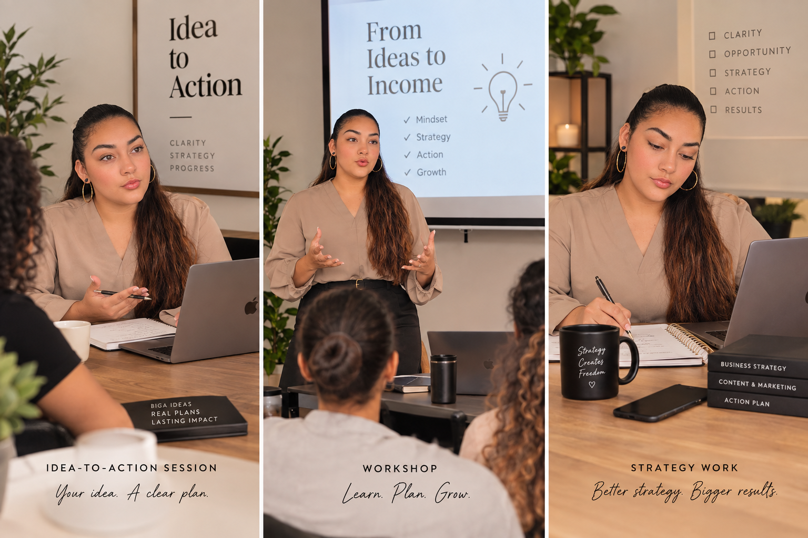

{{ p.title }}
{{ p.desc }}
{{ t.pillars }}
02{{ t.k2 }}
{{ m.text }}
{{ t.probTurn }}
{{ t.probClose }}
03{{ t.k3 }}
{{ t.before }}
“{{ b.text }}”
→{{ t.after }}
04{{ t.k4 }}
{{ p.desc }}

05{{ t.k5 }}
{{ t.offSub }}
{{ t.offDuring }}
06{{ t.k6 }}
{{ t.apIntro }}
{{ t.apOutlines }}
{{ t.apNot }} {{ t.apIs }}
{{ t.apLabel }}
{{ t.docTitle }}
{{ t.docFor }}

{{ r.label }}
{{ r.text }}
{{ t.docSteps }}
{{ t.docFirstLabel }}
{{ t.docFirst }}
{{ t.apLabel }}
07{{ t.k7 }}
{{ t.notH }}
{{ t.notA }}
{{ t.notB }}
08{{ t.k8 }}
{{ t.abP1 }}
{{ t.abP2 }}
{{ t.abP3 }}
{{ t.abP4 }}
09{{ t.k9 }}
{{ st.desc }}
10{{ t.k10 }}
{{ f.a }}